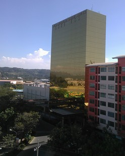

The Devastating Typhoon, 2011
The Typhoon Sendong was the most devastating typhoon that hit the city of Cagayan de Oro and its neighboring municipalities for the last 40 years. It took the lives of more than 1000 lives and displaced thousands of more families. This is a tragic lesson to be learned by the people of Cagayan de Oro from the global phenomenon of Climate Change.
The Recovery and Development
After the tragedy of 2011, Cagayan de Oro, a people of resilience once again exemplified the hope of a city. Policies are now careful on what should be done to not only mitigate , but ultimately eliminate the threat of Climate change. Help from local and international agencies flooded in. Eventually, the city was able to stand again and continue on its economical activities. Investors saw the growth of the city and established their expansions in the city. This would not only help rebuild but also take care of the environment, when the Sustainable Development Goals are prioritized.